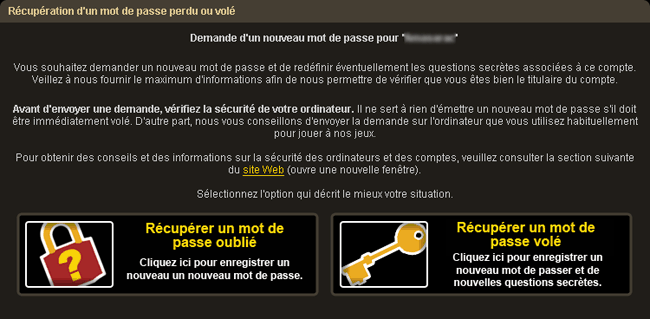
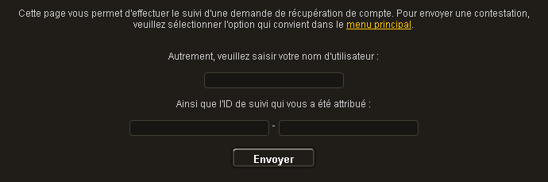

")
1. J'ai perdu mon mot de passe. Que dois-je faire ?
Si vous �tes certain que votre ordinateur est s�curis�, proc�dez de la mani�re suivante�:
Si nous n'avons pas bloqu� votre compte, cliquez ici pour r�cup�rer votre mot de passe.
Vous devrez ensuite indiquer votre nom de connexion. Apr�s vous �tre connect�, il vous sera demand� de s�lectionner entre un mot de passe oubli� et vol�. Veuillez s�lectionner � Oubli� �.
Veuillez suivre les instructions � l'�cran, en indiquant autant d'informations que possible.
Si vous ne connaissez pas ou ne vous souvenez pas de toutes les informations de votre compte, essayez de fournir les informations les plus anciennes concernant chacune des cat�gories demand�es. Cela nous permettra de traiter votre demande aussi rapidement que possible. Nous ne vous communiquerons un nouveau mot de passe que lorsque nous aurons v�rifi� que vous �tes bien le propri�taire du compte concern�.
Nous vous conseillons de lire ceci afin de v�rifier que votre mot de passe est aussi s�curis� que possible.
� la fin du processus, vous recevrez un identifiant de suivi avec lequel vous pourrez suivre la progression de votre demande. Veuillez noter cet identifiant, car il vous permettra d'obtenir la r�ponse � votre demande.
Si vous recevez une r�ponse vous demandant des informations suppl�mentaires, veuillez remplir une autre demande et fournir les informations les plus anciennes possibles dans les cat�gories demand�es.
N'oubliez pas que la s�curit� de votre mot de passe ne d�pend que de vous. Ne le d�voilez � personne.

2. Quelqu'un a modifi� mon mot de passe ou mes questions secr�tes. Que dois-je faire�?
Dans ce cas, nous vous conseillons de v�rifier tout d'abord que votre ordinateur est s�curis� et que personne n'est parvenu � obtenir votre mot de passe sur votre machine. Pour ce faire, consultez imm�diatement les sections 7 et 8 du guide Informations sur la s�curit�.
Apr�s avoir suivi les consignes et si vous �tes certain que votre ordinateur est s�curis�, veuillez proc�der de la mani�re suivante�:
Si nous soup�onnons que votre compte a �t� vol�, celui-ci sera bloqu� et personne ne pourra y acc�der. Pour d�bloquer votre compte, cliquez ici.
Si nous n'avons pas bloqu� votre compte, cliquez ici pour commencer le processus de recouvrement.
Vous devrez ensuite indiquer votre nom de connexion. Apr�s vous �tre connect�, il vous sera demand� de s�lectionner entre un mot de passe oubli� et vol�. Veuillez s�lectionner � Vol� �.
Veuillez suivre les instructions � l'�cran, en indiquant autant d'informations que possible.
Si vous ne connaissez pas ou ne vous souvenez pas de toutes les informations de votre compte, essayez de fournir les informations les plus anciennes concernant chacune des cat�gories demand�es. Cela nous permettra de traiter votre demande aussi rapidement que possible. Nous ne vous communiquerons un nouveau mot de passe que lorsque nous aurons v�rifi� que vous �tes bien le propri�taire du compte concern�.
Nous vous conseillons de lire ceci afin de v�rifier que votre mot de passe est aussi s�curis� que possible.
� la fin du processus, vous recevrez un identifiant de suivi avec lequel vous pourrez suivre la progression de votre demande. Veuillez noter cet identifiant, car il vous permettra d'obtenir la r�ponse � votre demande.
Si vous recevez une r�ponse vous demandant des informations suppl�mentaires, veuillez remplir une autre demande et fournir les informations les plus anciennes possibles dans les cat�gories demand�es.
N'oubliez pas que la s�curit� de votre mot de passe ne d�pend que de vous. Ne le d�voilez � personne.
3. Quelqu'un conna�t mon mot de passe. Que dois-je faire ?
Dans ce cas, nous vous conseillons de v�rifier tout d'abord que votre ordinateur est s�curis� et que personne n'est parvenu � obtenir votre mot de passe sur votre machine. Pour ce faire, consultez imm�diatement les sections 7 et 8 du guide Informations sur la s�curit�.
Apr�s avoir suivi les consignes et si vous �tes certain que votre ordinateur est s�curis�, veuillez proc�der de la mani�re suivante�:
Si nous soup�onnons que votre compte a �t� vol�, celui-ci sera bloqu� et personne ne pourra y acc�der. Pour d�bloquer votre compte, cliquez ici.
Si nous n'avons pas bloqu� votre compte, cliquez ici pour commencer le processus de recouvrement.
Vous devrez ensuite indiquer votre nom de connexion. Apr�s vous �tre connect�, il vous sera demand� de s�lectionner entre un mot de passe oubli� et vol�. Veuillez s�lectionner � Vol� �.
Veuillez suivre les instructions � l'�cran, en indiquant autant d'informations que possible.
Si vous ne connaissez pas ou ne vous souvenez pas de toutes les informations de votre compte, veuillez essayer de fournir les informations les plus anciennes pour chacune des cat�gories demand�es. Cela nous permettra de traiter votre demande aussi rapidement que possible. Nous ne vous communiquerons un nouveau mot de passe que lorsque nous aurons v�rifi� que vous �tes bien le propri�taire du compte concern�.
Nous vous conseillons de lire ceci afin de v�rifier que votre mot de passe est aussi s�curis� que possible.
� la fin du processus, vous recevrez un identifiant de suivi avec lequel vous pourrez suivre la progression de votre demande. Veuillez noter cet identifiant, car il vous permettra d'obtenir la r�ponse � votre demande.
Si vous recevez une r�ponse vous demandant des informations suppl�mentaires, veuillez remplir une autre demande et fournir les informations les plus anciennes possibles dans les cat�gories demand�es.
N'oubliez pas que la s�curit� de votre mot de passe ne d�pend que de vous. Ne le d�voilez � personne.
4. Utilisation du module de recouvrement de compte
Chaque joueur acc�de � son compte FunOrb � l'aide d'un nom d'utilisateur unique et d'un mot de passe qu'il a d�fini. Nous recommandons aux joueurs de choisir un mot de passe qu'ils pourront m�moriser facilement, mais qui sera difficile � deviner. Pour �viter d'oublier leur mot de passe, nous conseillons � nos joueurs de l'�crire sur un morceau de papier et de le conserver en lieu s�r. Nous rappelons qu'il ne faut jamais divulguer son mot de passe � qui que ce soit, y compris les amis et les proches.
Si un joueur divulgue son mot de passe pour une raison quelconque, il laisse la possibilit� aux autres de l'utiliser. Si vous rencontrez des probl�mes d'acc�s � votre compte, il est possible quelqu'un d'autre connaisse et ait chang� votre mot de passe. Si cela se produit, ou si vous ne vous souvenez pas de votre mot de passe, essayez de r�cup�rer votre compte en remplissant un formulaire de demande de r�cup�ration de mot de passe. Ce formulaire est accessible en cliquant ici.

Il est essentiel que vous choisissiez le type de demande appropri�. Un choix correct permet d'augmenter les chances de r�solution des probl�mes.
Si vous avez enregistr� une adresse �lectronique pour votre compte, nous vous demanderons de la fournir. Si nous pouvons confirmer que l'adresse fournie a bien �t� enregistr�e et v�rifi�e, nous l'utiliserons pour vous envoyer un code de s�curit�. Vous pourrez ensuite copier ce code dans la case correspondante du formulaire de recouvrement de compte. Si vous n'avez pas enregistr� d'adresse �lectronique, ou si vous avez oubli� l'adresse en question, laissez cette case vide et continuez le processus de recouvrement.
Le formulaire de recouvrement de compte s'affiche alors. Remplissez-le en vous assurant de fournir le plus d'informations possible. Il est possible que certaines questions ne s'appliquent pas � votre compte. En revanche, veillez � r�pondre clairement et correctement aux questions pertinentes. Plus nous recevrons d'informations pertinentes, plus nous aurons de chances d'identifier le v�ritable propri�taire du compte. Il vous faudra indiquer les informations suivantes :
- Vos r�ponses secr�tes
- Mots de passe pr�c�dents
Il y a �galement un champ permettant d'indiquer toutes informations suppl�mentaires susceptibles de prouver que vous �tes bien le propri�taire du compte. En principe, l'avis de confirmation de paiement que vous avez re�u contient votre num�ro de transaction ainsi que d'autres num�ros de r�f�rence. C'est pourquoi vous devez veiller � conserver ces informations en lieu s�r.
Si vous ne connaissez pas ou ne vous souvenez pas de toutes les informations de votre compte, essayez de fournir les informations les plus anciennes concernant chacune des cat�gories demand�es. Cela nous permettra de traiter votre demande aussi rapidement que possible. Nous ne vous communiquerons un nouveau mot de passe que lorsque nous aurons v�rifi� que vous �tes bien le propri�taire du compte concern�.
Essayez d'indiquer autant d'informations que possible et aussi clairement que possible pour augmenter vos chances de recevoir une r�ponse positive. Vous devrez aussi indiquer un nouveau mot de passe ; nous vous conseillons de lire cet article pour vous assurer que votre mot de passe est aussi s�curis� que possible.
Suivi des demandes
Chaque demande de mot de passe est associ�e � un identifiant de suivi unique. Pour acc�der au suivi, veuillez cliquer ici.
Vous devrez alors saisir l'identification de suivi sur la page qui s'affiche.

Saisissez votre nom d'utilisateur et l'identifiant de suivi. La progression de la r�cup�ration de votre mot de passe vous sera alors communiqu�e. Veuillez noter que certaines demandes de r�cup�ration de mot de passe sont plus longues � traiter que d'autres.